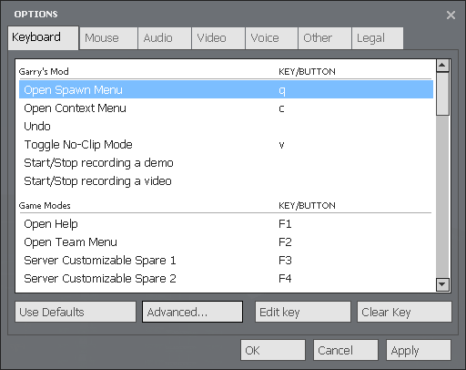
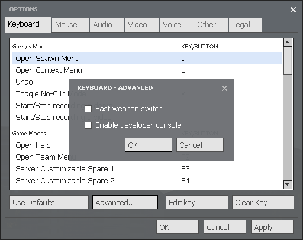
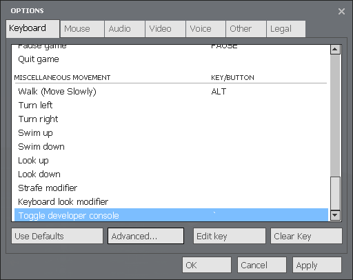
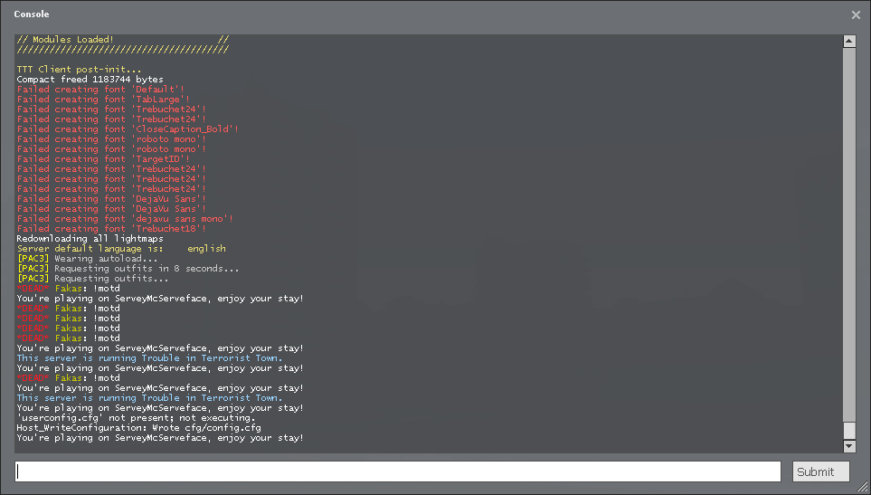
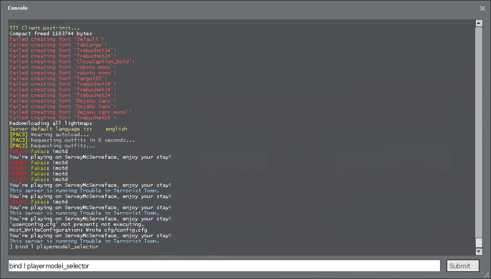

Go Back
How do I open the Developer Console?
1. Return to the main menu.
2. Open the Options menu and select the Keyboard tab.

3. Click on the "Advanced..." button.

4. Tick the "Enable developer console" box.
5. Click the "OK" button and scroll down to the bottom of the Keyboard Options menu.

6. Note the button for "Toggle developer console" or set it to your preferred button.
7. Exit the options menu and press your "Toggle developer console" button.

8. You can now copy and paste bindings and commands into the developer console.
